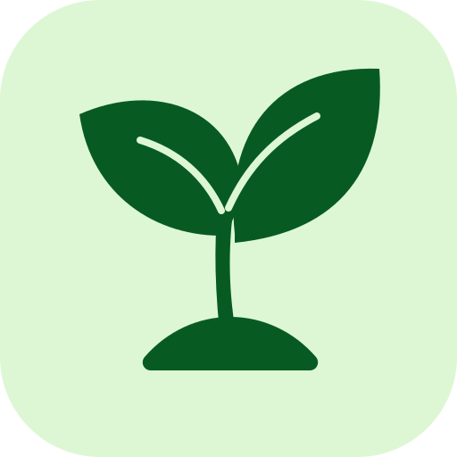

FOCUS RESETKẾ HOẠCH 14 NGÀY
Lấy lại khả năng tập trung.
Chia mục tiêu thành từng phần rõ ràng để bạn dễ thực hiện mỗi ngày. Không cần làm hoàn hảo — hãy theo dõi tiến bộ của mình.
Ngày đang xemNgày 1 / 14
Số ngày đã bắt đầu0 / 14
Chọn ngày
Chạm để xem / sửa🌱 Mẹo nhỏ hôm nay
Ngày 1Đánh giá cuối ngày
Ghi nhận, không phán xétĐiều cần nhớ
Đây là kế hoạch hỗ trợ thói quen, không phải công cụ chẩn đoán. Vì tình trạng giảm tập trung, mệt dù ngủ và khó theo dõi cuộc trò chuyện đã kéo dài khoảng một tháng, hãy chia sẻ với phụ huynh/người giám hộ và sắp xếp trao đổi với bác sĩ hoặc chuyên viên y tế. Đừng chờ đủ 14 ngày mới tìm hỗ trợ. Nếu xuất hiện lú lẫn đột ngột, đau đầu dữ dội bất thường, yếu/tê một bên, nói khó hoặc rối loạn thị giác, cần được cấp cứu.
Dữ liệu được lưu trên trình duyệt của thiết bị này. Nếu đổi trình duyệt hoặc thiết bị, dữ liệu không tự đồng bộ.